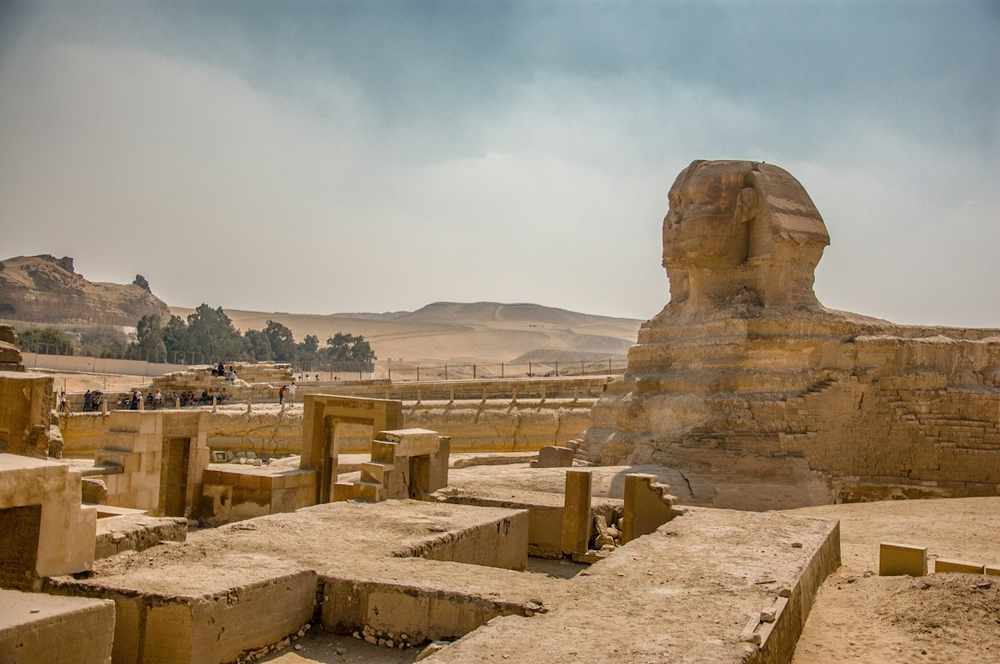
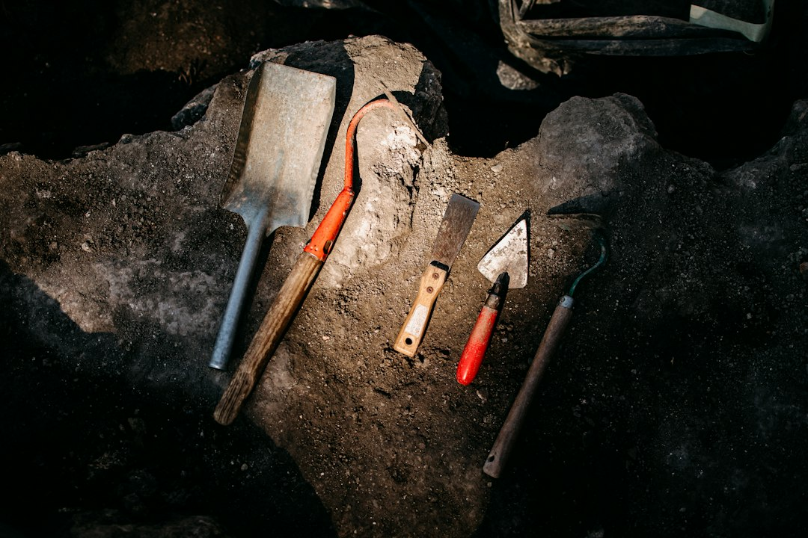
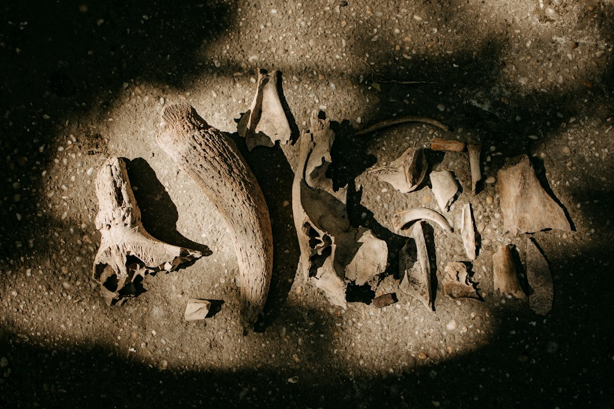
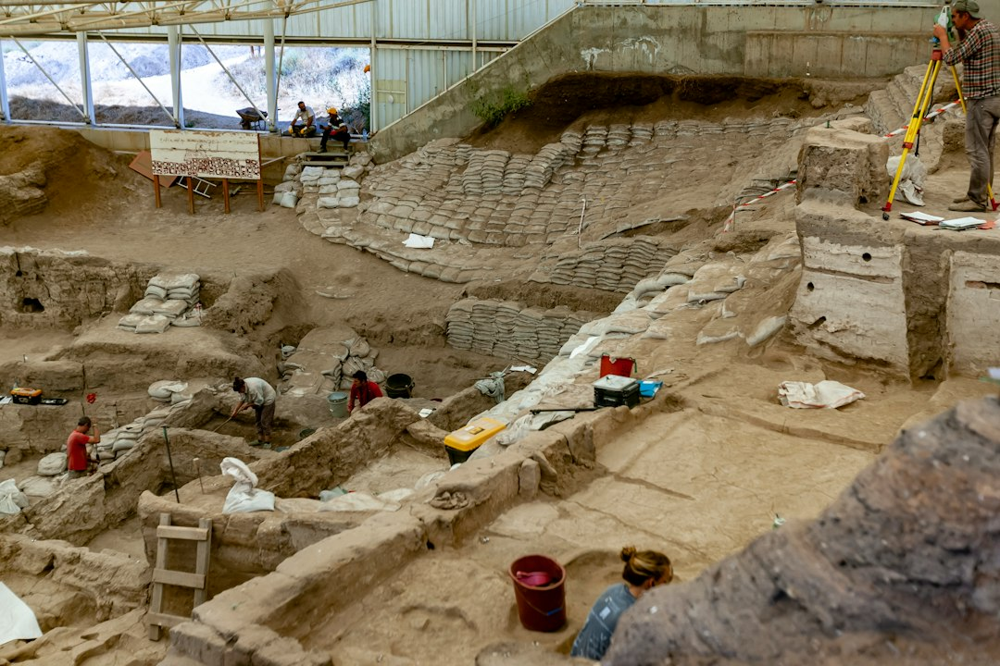
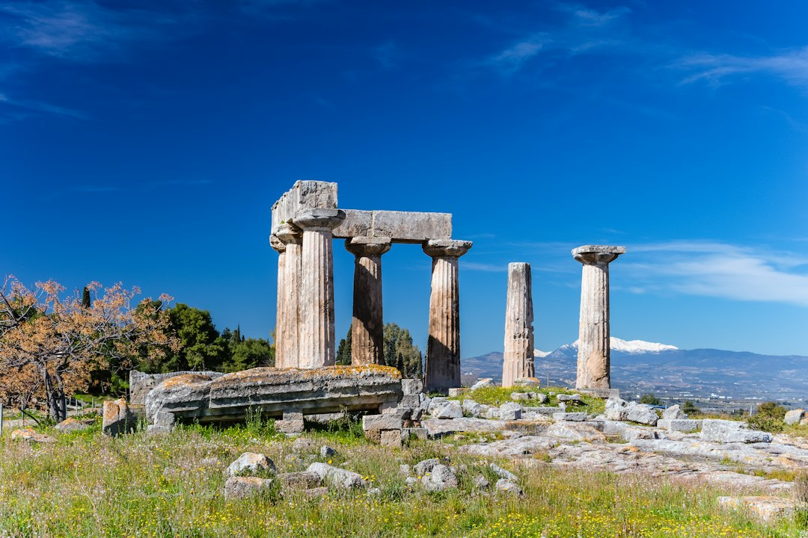
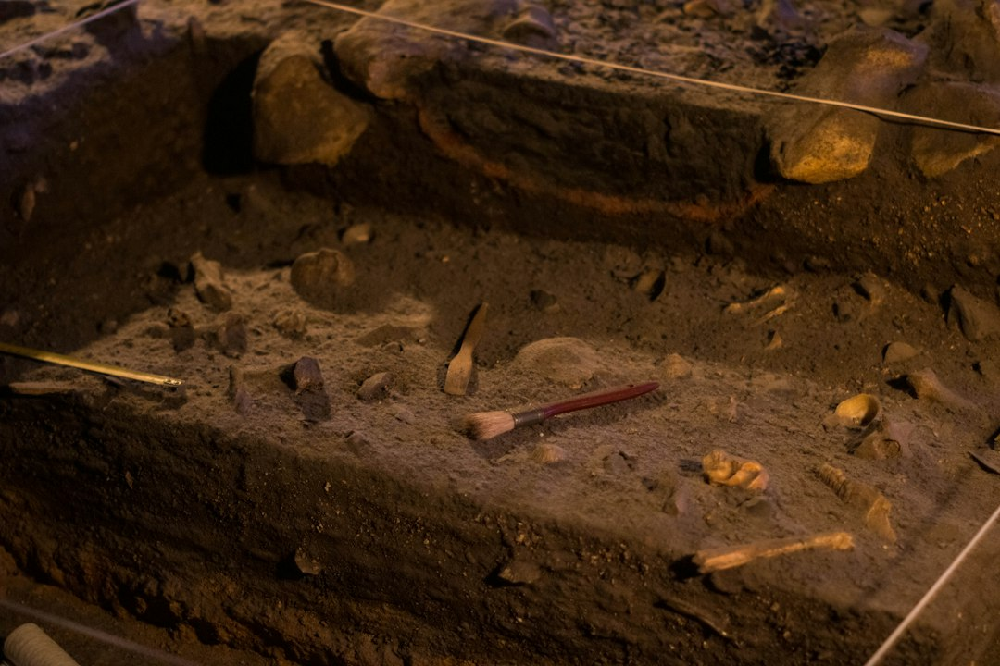
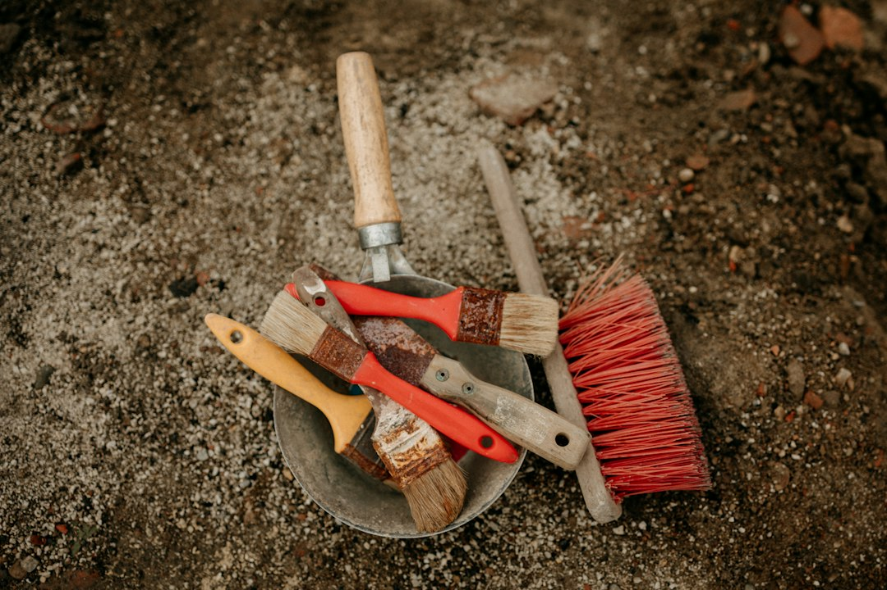

📍 Location: Taygetos Mountains, near Sparta, Laconia, Greece
📅 Period: 13th to 19th Century
🏷️ Category: Cultural
⚠️ Status: UNESCO World Heritage Site
📏 Significance: The final flowering of Byzantine art and philosophy; a bridge between the medieval East and the Renaissance West; a masterclass in Late Byzantine urban planning.

To approach Mystras is to ascend into the silence of a kingdom that refused to vanish. The site does not merely occupy the landscape; it colonizes the imagination, clinging to the sheer, jagged flanks of Mount Taygetos like a barnacle on the hull of a sinking ship. Here, the air carries the scent of wild thyme and the sharp, metallic tang of history. As you climb the winding, narrow paths that snake between the skeletal remains of palaces and churches, the modern world—with its frantic pace and digital noise—sloughs away. You are left with the brutal reality of stone and the ethereal grace of frescoed walls that have weathered centuries of indifference.

The first impression is one of verticality. Mystras is a city of layers, a tiered necropolis of the spirit where the Despots of the Morea once held court while the shadow of the Ottoman scythe grew long over the horizon. The ruins are not merely piles of rock; they are the petrified dreams of an empire that knew its own end was imminent. Every archway frames a view of the Eurotas Valley, a sprawling, verdant expanse that was once the breadbasket of a dying civilization. Looking down from the Upper Town, one feels the vertigo of time. You aren't just looking at architecture; you are looking at the final, desperate gasp of a culture that had nurtured the flames of classical antiquity for a millennium. It is a place of profound melancholy, a physical manifestation of the translatio imperii, where the gravity of the Roman legacy finally pulled the center of the world into the dust. The stones here are cold, yet they hum with the residual heat of a thousand candles, of debates held in the shadows of libraries, and of the frantic, beautiful prayers whispered by those who knew the end was coming.

The origins of Mystras are not found in the ancient soil of Sparta, but in the chaotic shifting of power following the Fourth Crusade. When the Latin Crusaders carved up the Byzantine Empire in 1204, the Peloponnese became a contested patchwork of Frankish ambition. In 1249, William II of Villehardouin, the Frankish Prince of Achaea, constructed a fortress on the summit of the hill, a strategic perch to dominate the Laconian plain. It was a classic feudal imposition, a cold stone fist thrust into the heart of a Greek landscape. However, the Frankish occupation was short-lived. Following the Battle of Pelagonia in 1259, William was captured by the resurgent Byzantines, and in 1262, he ceded the fortress to the Emperor Michael VIII Palaiologos as part of his ransom.

This moment marked the birth of Mystras as the capital of the Despotate of the Morea. It was a peculiar, almost miraculous transformation. While Constantinople withered under the slow strangulation of its enemies, Mystras blossomed. It became a sanctuary for the Greek intelligentsia, a place where the embers of Hellenism were fanned into a final, brilliant blaze. The Palaiologan Renaissance found its most fertile ground here, shielded by the rugged peaks of Taygetos. Philosophers, theologians, and artists flocked to the city, transforming a military outpost into a center of intellectual ferment.

It was here that George Gemistos Plethon, the last great philosopher of the Byzantine tradition, taught his radical synthesis of Platonism and Christianity. He walked these streets, envisioning a reformed Greek state that looked back to the wisdom of the ancients to solve the crises of the present. The city grew in wealth and stature, its architecture reflecting a synthesis of Roman, Frankish, and Slavic influences. It was a melting pot of the medieval Mediterranean, a place where the rigid hierarchies of the Byzantine court were forced to adapt to the realities of a frontier state. The Despots who ruled from here were not merely governors; they were the guardians of a vanishing flame. Their reign was marked by a peculiar duality: the pursuit of courtly luxury and the constant, gnawing anxiety of the Turkish threat. It was a civilization that existed in the "long now," where every act of construction—every mosaic, every fresco, every carved marble lintel—was an act of defiance against the inevitable. When the city finally fell to the Ottomans in 1460, seven years after the collapse of Constantinople, it did not go out with a whimper, but with the quiet, dignified resignation of a culture that had already completed its life's work.
To walk through the churches of Mystras is to read a visual theology. The architecture, characterized by the "Mystras style," is a distinct evolution of the classic Byzantine cross-in-square design, often elongated and adorned with the decorative brickwork and blind arches that signify the influence of Western Gothic builders. The Church of Agios Demetrios, the metropolitan cathedral, acts as the heart of the site. It is here that the last Byzantine Emperor, Constantine XI Palaiologos, was crowned in 1449—an event that feels as tragic as it was grand, given the impending fall of his capital. The floor is paved with a marble slab featuring a two-headed eagle, the symbol of the empire, which seems to stare up at the visitor with the weight of centuries.

Then there is the Pantanassa Monastery, the most evocative of the structures, where the nuns still maintain a presence that feels like a continuation of the site’s original purpose. Its architecture is a riot of ornamentation, a late-period exuberance that flirts with the flamboyant. The carvings on the exterior, with their intricate floral motifs and geometric patterns, speak to a culture that was reaching for beauty even as its political foundations crumbled. The frescoes inside are masterpieces of the Late Byzantine school, characterized by a newfound humanism. The figures in these paintings are not the distant, static icons of the early church; they are expressive, emotive, and deeply human. You can see the sorrow in the eyes of the Virgin, the weary determination of the saints, and the fluid, almost rhythmic movement of the drapery.
The Peribleptos Monastery, carved partly into the natural rock of the hillside, offers a glimpse into how the city integrated itself into the mountain. Its frescoes are among the most important in the Orthodox world, representing a bridge to the Italian Renaissance. The interplay of light and shadow, the depth of the perspective, and the psychological realism of the faces suggest that the artists of Mystras were in dialogue with the burgeoning masters of the West. It is a haunting thought: that while the Renaissance was dawning in Florence, the seeds were being sown simultaneously here, in the shadow of the Taygetos, by artists who would soon see their world extinguished. The site is littered with these architectural marvels—the Hodegetria, the Agioi Theodoroi, the Palace of the Despots—each a testament to a society that refused to sacrifice its aesthetic soul for the sake of survival. They built for eternity, knowing full well that they were living in the final hour.
The lifestyle within these walls was as complex as the architecture. Mystras was a city of rigid social stratification, yet it was also a place of immense cultural mobility. The palace was a center of diplomatic intrigue, where the Despots navigated the treacherous waters between the waning power of Byzantium, the rising influence of the Venetians, and the looming shadow of the Ottomans. Life for the common citizen was dictated by the seasons and the cycle of the church. The markets of the lower city were vibrant, filled with goods from across the Mediterranean, and the sound of trade was a constant counterpoint to the chanting from the monasteries. For a deeper look at how such trade centers shaped the medieval world, one might consider the history of Medieval Port Cities, where the exchange of goods often mirrored the exchange of ideas seen here in the mountain heights.
The intellectual life, centered around the circle of Plethon, was perhaps the most remarkable aspect of the city. While the rest of Europe was struggling to reconcile its faith with the rediscovered texts of antiquity, the scholars of Mystras were already doing it. They saw no conflict between the wisdom of Plato and the doctrines of Christ; they viewed the former as a ladder to the latter. This synthesis, however, was not universally welcomed, and the debates held in the libraries of Mystras were often heated, reflecting the wider tensions of a society caught between two worlds. It is this intellectual dynamism that makes the ruins so heavy with meaning; one feels that if they could only listen closely enough, the walls might still be whispering the arguments of those long-dead philosophers.
The fall of Mystras was not a sudden catastrophe but a slow, rhythmic fading. After the Ottoman conquest, the city remained inhabited for centuries, though its status as a cultural capital was effectively erased. The Turkish authorities occupied the palace, and the city transitioned into a provincial center, its grand churches slowly losing their luster to the elements and neglect. The final abandonment in the early 19th century, following the Greek War of Independence, left the city to the mercy of the wind and the mountain. For a time, it was a ghost town, a place where only the shepherds and their flocks dared to tread, creating a landscape of desolation that has been explored in other accounts of Abandoned Medieval Citadels.

Conservation efforts in the 20th century were, in many ways, an act of historical reclamation. The site was not merely saved from physical collapse; it was re-contextualized as the definitive monument of Byzantine history. However, this raises the question of what we are actually preserving. Is it the stone, or the idea of the stone? The modern challenge at Mystras is the tension between the archaeological mandate to "freeze" the site and the reality of its inherent decay. The frescoes are particularly vulnerable. Humidity, temperature fluctuations, and the sheer passage of time have caused the pigments to flake and the plaster to crack. Every year, a little more of the "humanity" in those painted eyes is lost to the void.
Furthermore, the site faces the challenge of mass tourism. How does one maintain the solemnity of a place that was once a sanctuary for philosophers when it is now a backdrop for the hurried photographs of thousands? The experience of Mystras requires a stillness that is often incompatible with the modern itinerary. Yet, it is precisely this stillness that the visitor must seek. To understand Mystras is to understand the value of the "long view." It is to recognize that civilizations are not static entities, but living, breathing, and ultimately fragile organisms. The modern visitor is an intruder in a space that was designed for contemplation, not consumption. Our task is to ensure that the site remains a place where the echo of the past can still be heard, rather than just another item on a list of things to see. For those interested in how we manage such fragile sites, the study of Preservation of Ancient Art provides a sobering look at the race against time that characterizes all archaeological conservation.
The human connection to Mystras today is perhaps most visible in the local community of Sparta and the surrounding villages. For them, the site is not a museum; it is a neighbor. It is the backdrop to their lives, a constant reminder of the depth of their heritage. They see the mountain every morning and every evening, and the ruins are woven into the fabric of their identity. The challenge for the future is to ensure that this connection remains vital, that the site does not become an ossified relic but remains a place of ongoing dialogue. We must learn to listen to what the stones have to say, for they are the only witnesses left to the end of an empire.
Mystras is a testament to the endurance of the human spirit in the face of inevitable decline. It was a city that, in its final centuries, chose to define itself by its intellectual and artistic output rather than its military might. The ruins that remain are not just the remnants of a fortress; they are the physical manifestation of a culture that turned inward to find the strength to survive the end of its world. By preserving the site, we are not just keeping stone walls standing; we are holding onto a vital chapter in the history of human thought. The interplay between the Byzantine, the Frankish, and the eventually encroaching Ottoman influences created a crucible that defined the transition from the medieval to the modern. It is a place that demands we confront our own mortality, both as individuals and as societies.
Ultimately, Mystras leaves the visitor with a lingering sense of awe and a profound, quiet sadness. It is the silence of the mountain that strikes you most—a silence that is not empty, but heavy with the weight of the thousands of lives that once surged through these narrow, winding alleys. When you leave the site, you carry a piece of that silence with you. It is a reminder that all that we build, all that we create, and all that we cherish will eventually be reclaimed by the earth. But in that reclamation, there is a strange, enduring beauty. We are here to witness the sunset of an empire, and in doing so, we gain a clearer understanding of the dawn that followed. Mystras remains a beacon, a flickering candle held up against the darkness of time, inviting us to look, to listen, and to remember.
Q1: What is Mystras known for?
Mystras is renowned as the last great center of Byzantine art, philosophy, and political power before the Ottoman conquest, serving as the seat of the Despotate of the Morea.
Q2: When was Mystras active/important?
The site was at its peak from the mid-13th century until the mid-15th century, acting as a crucial cultural and intellectual hub until it fell to the Ottomans in 1460.
Q3: Is Mystras a UNESCO World Heritage Site?
Yes, the Archaeological Site of Mystras was inscribed as a UNESCO World Heritage site in 1989 due to its exceptional preservation of Byzantine architecture and art.
Q4: How can one visit Mystras?
Mystras is located near the modern town of Sparta in the Peloponnese, Greece. It is accessible by road, and visitors can explore the upper and lower towns on foot.
Q5: What are the biggest threats facing Mystras today?
The primary threats include the degradation of delicate frescoes due to environmental exposure, the challenges of structural preservation, and the pressure of managing tourism in a fragile archaeological environment.
| Detail | Information |
|---|---|
| Nearest City | Sparta (approx. 7km) |
| Access | Car or bus from Sparta; involves significant walking and climbing |
| Best Season | Spring (April-May) or Autumn (September-October) |
| Current Status | Open to the public with paid admission |
| Permissions | No special permits needed for general site access |
| Site Museum | Located at the entrance, housing artifacts from the site |
| Advisory | Wear sturdy shoes; the terrain is steep and uneven |
| Fact | Detail |
|---|---|
| Site Name | Archaeological Site of Mystras |
| Location | Greece, Peloponnese |
| Category | Cultural |
| UNESCO Status | Inscribed 1989 |
| Year Inscribed | 1989 |
| Main Period(s) | 13th–19th Century |
| Primary Significance | Late Byzantine art, architecture, and intellectual history |
| Key Features | Despots' Palace, Pantanassa Monastery, Agios Demetrios Cathedral |